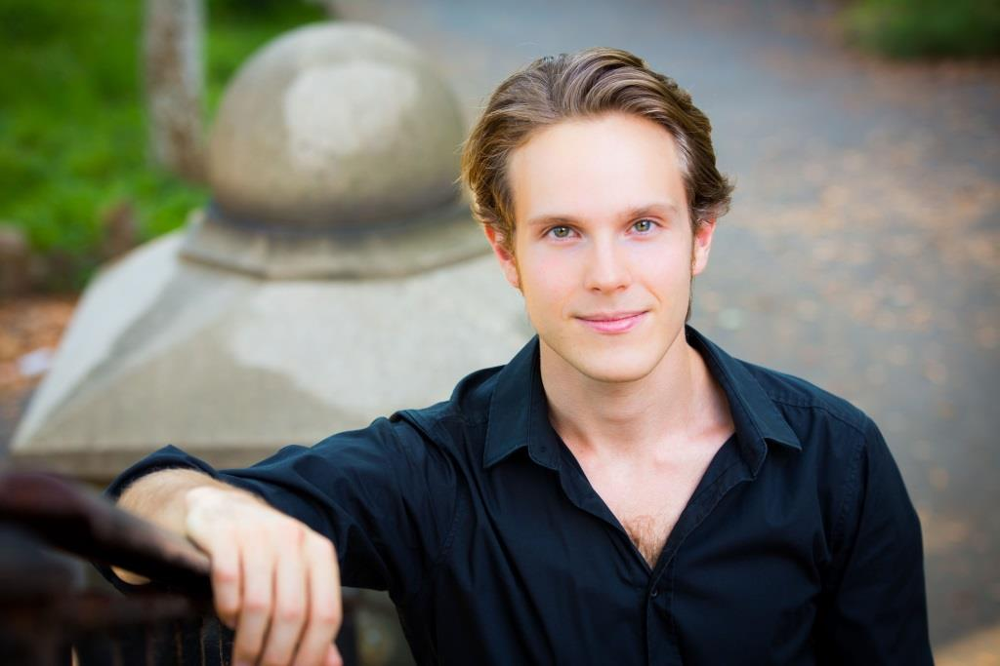

About Me

Taddes Korris is an active classical bassist, currently living in Charlotte, NC. He grew up in Edmonton, Canada to a musical family of Lithuanian descent and began his bass studies at 16 with Jan Urke of the Edmonton Symphony. Taddes attended the Manhattan School of Music where he completed his Bachelors degree in 2012 and his Masters in 2014, receiving the Homer Mensch Award for excellence in double bass performance.
Taddes’ first professional engagement was with the Edmonton Symphony in 2012 and has subsequently performed with the Charlotte, Charleston and North Carolina Symphonies after moving to the region in 2014 with his wife, Sarah Markle, a section cellist in the Charlotte Symphony. Festivals appearances include the Arizona MusicFest, National Repertory Orchestra, Moritzburg Festival (Dresden, Germany), Brevard Festival(North Carolina), and Karl Flesch Institute (Baden-Baden, Germany).
Taddes is an avid chamber musician and has performed most of the standard chamber works for double bass, including several commissions and new-music works. Notably, Taddes performed Stravisnky’s Soldier’s Tale at the Russian Embassy in Washington D.C. for a joint Swiss-Russian cultural gala.
Taddes has engaged in many activities to promote Lithuanian music. He has arranged, transcribed and performed Lithuanian chamber and solo works for bass. He also organized a large-scale recording project of orchestral works of the composer M.K. Ciurlionis in Edmonton, Canada. He is a current writer for the Lithuanian newspaper "Draugas" where he contributes a monthly column about Lithuanian music. Taddes has presented several talks on classical music, orchestral performance, and Lithanian composers.